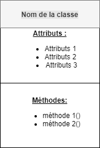
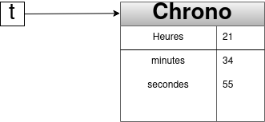

La programmation objet#
L’architecture objet#
Histoire#
La programmation orientée objet, qui fait ses débuts dans les années 1960 avec les réalisations dans le langage Lisp, a été formellement définie avec les langages Simula (vers 1970) puis SmallTalk. Puis elle s’est développée dans les langages anciens comme le Fortran, le Cobol et est même incontournable dans des langages récents comme Java.
Concept#
La notion d’objet constitue une étape fondamentale pour réutiliser des composants ou "briques logicielles" . L’adoption de cette approche nous invite à répondre d’abord à la question "De quoi parle-t-on ?" et non pas "Que veut-on faire ?". La conception objet possède un aspect intuitif fort dans la mesure ou l’on s’efforce de calquer la représentation informatique sur des entités physiques ou conceptuelles apparaissant dans le processus à modéliser.
Principes et terminologie objet#
Objets et encapsulation#
Un objet comprend :
- une partie figée qui représente son état et les liens qui l’unissent à d’autres objets ;
- et une partie dynamique qui décrit son comportement , c’est-à-dire toutes les opérations qu’on peut lui appliquer ainsi que sa manière de réagir aux évènements de l’environnement.
- Sa partie fixe est constituée d’un ensemble de champs (ou attributs) et sa partie dynamique d’opérations appelées méthodes. Certaines de ces méthodes constituent la partie visible de l’objet. C’est par elles que l’on s’adresse à lui. Elles constituent autant de services qu’on peut demander à l’objet de fournir. Certains champs peuvent être partiellement ou totalement inaccessibles à d’autres objets. C’est alors qu’on parle d’encapsulation.
On peut représenter graphiquement une classe de la manière représentée ci-dessous :

Classes et instances#
Quand les objets possèdent une structure et des comportement en commun, on peut les regrouper sous forme de classe.
Une classe est une sorte de moule à partir duquel sont produits les objets que l’on appelle instances de la classe. Les instances d’une même classes ne diffèrent que par les valeurs de leurs attributs. La programmation objet consiste alors à définir les bonnes classes dotées de leurs champs et méthodes, puis à les instancier pour créer des objets et les faire intéragir.
Une première classe#
Supposons que l’on souhaite manipuler des entiers représentant des temps mesurés en heures, minutes et secondes. On appellera la structure correspondante Chrono. Les trois nombres pourront être appelés dans l’ordre heures,minutes et secondes.
Python permet la définition de cette structure Chrono sous la forme d’une classe avec le code définit dans le programme 1.
Ce que contient la définition de la class Chrono :
- la définition d’une classe est introduite par le mot-clé class suivi du nom choisi pour la classe et d’un symbole : (deux points) ;
- le nom de la classe commence en général par une majuscule ;
- la chaîne de documentation ;
- tout le reste de la définition est placé en retrait.
- la définition d’une méthode particulière : le constructeur. En python, son nom est imposé : init. Un constructeur est une méthode invoquée lors de la création d’un objet. Cette méthode effectue les opérations nécessaires à l’initialisation d’un objet. Cette méthode n’a aucune valeur en retour, c’est l’objet qui est renvoyé.
- une méthode display() qui affiche l’heure.
Nous pouvons maintenant instancier notre classe. Pour créer un objet (une instance), on utilise la syntaxe :
| Programme 2 | |
|---|---|
L’appel à la méthode display() s’appliquant au chronomètre t est réalisé comme dans le programme 3 :
| Programme 3 | |
|---|---|
Remarque 1 : on peut accéder à la documentation de la classe et du constructeur grâce aux instructions suivantes.
Remarque 2 : La variable t ne contient à strictement parler l’objet qui vient d’être construit mais un pointeur vers le bloc mémoire qui a été alloué à cet objet. La situation correspond donc au schéma suivant.

Remarque 3 :
En fait, plutôt que d’utiliser cette méthode display(), on utilise plutôt la méthode suivante :
| Programme 5 | |
|---|---|
Ensuite pour visualiser l’heure, il nous faut l’appeler comme dans le programme 6.
| Programme 6 | |
|---|---|
Exercice 1
Écrire une classe Dinosaure dont les attributs sont : * sa longueur ; * sa hauteur ; * son poids ; * sa vitesse maximale
Vous construirez l’instance triceratops avec comme caractéristiques : 9 m de longueur, 3 m de hauteur, une masse de 9 tonnes environ, et une vitesse maximale donnée à 32 km/h. Puis l’instance Tyrannosaurus Rex. Celui-ci mesurait 13 m de longueur, pesait 8 t environ, 6 m de haut et devait courir à 27 km/h.
Encapsulation#
Le problème des accès aux données#
On peut accéder aux attributs d’un objet t de la classe Chrono avec la notation t.a où a désigne le nom de l’attribut visé. Par exemple, le code d’accès à l’attribut secondes s’écrit comme dans le programme 7. Pour rendre privé les attributs d’une classe, il faut les faire précéder de 2 tirets. Exemple, dans le constructeur de la classe Chrono, self.__heures = h.
Remarque : on peut rendre privé aussi les méthodes en les faisant précéder de deux tirets.
Les accesseurs ou "getters"#
On ne va généralement pas utiliser la manière de procéder précédente nom_objet.nom_attribut permettant d’accéder aux valeurs des attributs car on ne veut pas forcement que l’utilisateur ait accès à la représentation interne des classes.
Pour utiliser ou modifier les attributs, on utilisera de préférence des méthodes dédiées dont le rôle est de faire l’interface entre l’utilisateur de l’objet et la représentation interne de l’objet (ses attributs). Les attributs sont alors en quelque sorte encapsulés dans l’objet, c’est à dire non accessibles directement par le programmeur qui a instancié un objet de cette classe.
Pour obtenir la valeur d’un attribut nous utiliserons la méthode des accesseurs (ou "getters") dont le nom est généralement : get_nom_attribut(). Par exemple, pour afficher la valeur des heures, on peut employer la méthode get_heure() comme dans le programme 8.
Modifications contrôlées des valeurs des attributs : les mutateurs ou "setters"#
En cas de besoin, on peut modifier les valeurs attribuées aux attributs. Pour cela, on passe par des méthodes particulières appelées mutateurs (ou "setters") qui vont modifier la valeur d’une propriété d’un objet.
Le nom d’un mutateur est généralement : set_NomAttribut().
Exercices#
Exercice 2
Réaliser l'exercice de la page suivante : class Chien
Exercice 3
On considère une classe Personnage représentant un personnage de Jeu.
Le plateau de jeu est représenté par un repère orthonormé à trois axes. La position du joueur dans le plateau est repérée par ses attributs x, y, z.
Écrire un constructeur initialisant les mesures. Écrire les méthodes avance, droite et saute permettant respectivement de faire avancer, aller à droite et sauter le personnage, c’est-à-dire d’augmenter de 1 respectivement x, y et z. Implémenter une autre méthode coord renvoyant les coordonnées sous forme d’un triplet. Tester avec :
Exercice 4
On considère une classe Carre admettant la mesure des côtés d’un carré en attribut.
- Écrire un constructeur initialisant les mesures.
- Écrire les méthodes :
- perimetre , permettant de retourner le périmètre du carré.
- aire permettant de retourner son aire.
- Créer des exemples
Exercice 5
Définir une classe Eleve qui aura comme attribut:
- le nom de l'élève (défini directement dans le constructeur) ;
- un tableau de notes ;
- une moyenne.
Cette classe devra comporter les méthodes suivantes :
- des accesseurs (voir cours)
- une méthode
ajouter_note() - une méthode
calculer_moyenne()
Exercice 6
On souhaite caractériser informatiquement la notion de point telle qu’elle existe en 2 dimensions : aussi bien en coordonnées cartésiennes \((x, y)\) qu’en coordonnées polaires \((r, \theta)\).
- Implémenter cette classe en python. On utilisera le module
math. On rappelle que dans le l’intervalle \(]−\pi, \pi[\), on a :
A l’aide de classe, on donnera les coordonnées polaires des 4 points suivants : \(A(-2,5) ; B(5,5) ; C(-2,-2) ; D(5-2)\).
Exercice 7
Définir une classe Angle pour représenter un angle degrés. Cette classe contient un unique attribut, angle qui est un entier. On demande quoi qu’il arrive, que l’égalité \(0 ≤ angle < 360\) reste vérifiée.
- Écrire le constructeur de cette classe.
- Ajouter une méthode
__str__qui renvoie une chaîne de caractères de la forme “60 degrés”. - Ajouter une méthode
ajoutequi reçoit un autre angle en argument (un objet de la classeAngle et l’ajoute au champanglede l’objet. Attention à ce que la valeur de l’angle reste bien dans l’intervalle de l’objet. - Ajouter deux méthodes
cosinusetsinuspour calculer respectivement le cosinus et le sinus de l’angle. On utilisera pour cela les fonctionscosetsinde la bibliothèquemath. Attention : il faut convertir l’angle en radian avant d’appeler les fonctions cosinus et sinus.
Exercice 8
Définir une classe Date pour représenter une date avec trois attributs jour, mois et annee. Attention, on rentre le mois par son numéro.
- Écrire son constructeur
- Ajouter une méthode
__str__qui renvoie une chaîne de caractères de la forme “8 mai 45”. On pourra se servir d’un attribut de classe qui est tableau donnant les douzes mois de l’année. Tester en construisant des objets de la classe Date puis en les affichant avec print. - ajouter une méthode
anterieur_a()qui permet de déterminer si une dated1est antérieur à une dated2en écrivantd1 < d2. Cette méthode renvoie un booléen.
Exercice 9
Écrire un classe Temps en Python qui permet de définir un horaire au format hh : mm : ss et qui admet les méthodes suivantes :
__str__qui affiche l'horaire au format "12h32m20s" ;__add__qui ajoute deux horaires de la classe Temps ;__sub__qui calcule la différence entre deux horaires de la classe Temps .
Exercice 10
En python, écrire une classe Vecteur admettant trois attributs (ses coordonnées dans l'espace) comportant :
- une méthode permettant d'afficher les coordonnées du vecteur sous la forme (x; y; z) ;
- une méthode
__add__renvoyant le vecteur somme de deux vecteurs ; - une méthode
normerenvoyant la norme du vecteur ; - une méthode
__mul__renvoyant le produit scalaire de deux vecteurs ; - une méthode
is_colinpermettant de renvoyer si un vecteur est colinéaire à un autre vecteur (passé en attribut); - une méthode
is_orthopermettant de renvoyer si un vecteur est orthogonal à un autre vecteur (passé en argument).
Exercice 11
Écrire en python, une classe complexe :
- qui définit un nombre complexe (le constructeur devra initialiser un tuple de deux nombres : la partie réelle et la partie imaginaire) ;
- ayant une méthode permettant d'afficher le nombre complexe sous forme d'un tuple de deux éléments ;* permettant d'ajouter, soustraire, multiplier et comparer (en termes d'égalité) deux nombres complexes ;
- permettant de donner la distance de l'origine du repère au point représenté par le point complexe (on appelle cette distance le module, qui est égale à \(\sqrt{x^2 + y^2}\)